Doghouse
Doghouse is a session-based format built around a single pressure concept: one team is placed "in the doghouse" and must score enough points to escape. While they are in the doghouse, challengers rotate in to play against them. Every point the doghouse team scores counts toward their escape total. If they hit the Escape Points target, they break free and return to the queue. If they lose too many games before escaping, they hit the Loss Limit and are ejected — sent back to the queue without credit. A session timer drives the whole event and player stats track escapes across the session.
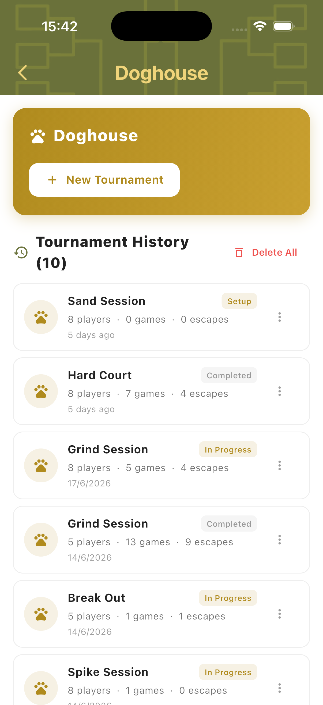
Best for
- Informal group sessions where you want one focal "challenge" spot
- Groups that enjoy a high-pressure, escape-or-get-ejected format
- Sessions where continuous rotation and pressure keep things competitive
Tournament Setup
Tap New Tournament to open the setup form. Configure the number of players, total session time, match style, assignment mode, Escape Points target, and Loss Limit. Add players, name the tournament, then tap Create Tournament to begin.
Session Settings
Set the player count, session time (e.g. 60 min), match style (2v2), assignment mode (Manual or Automated), Escape Points target, and Loss Limit. Escape Points determines how many points a doghouse team must score to escape. Loss Limit sets how many games they can lose before being ejected. Set either to 0 to disable that condition.
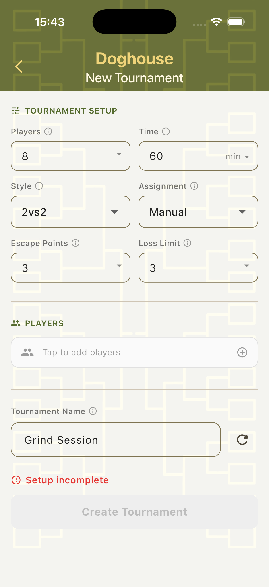
Assignment Modes
Manual — the organiser selects which two players enter the doghouse after each rotation. Automated — TournaQ automatically selects the next doghouse team, shows an Up Next preview, and manages the queue. Automated mode also includes a Re-roll option if you want to shuffle the assignment.
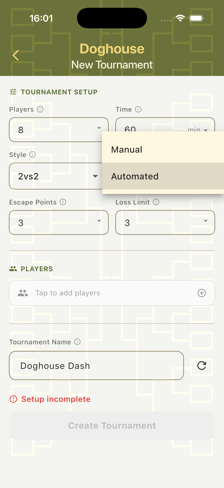
Add Players
Tap the Players field to open the player panel. Create players on the spot, import from the Players Hub, or use a random fill option. All added players enter the rotation from the start of the session.
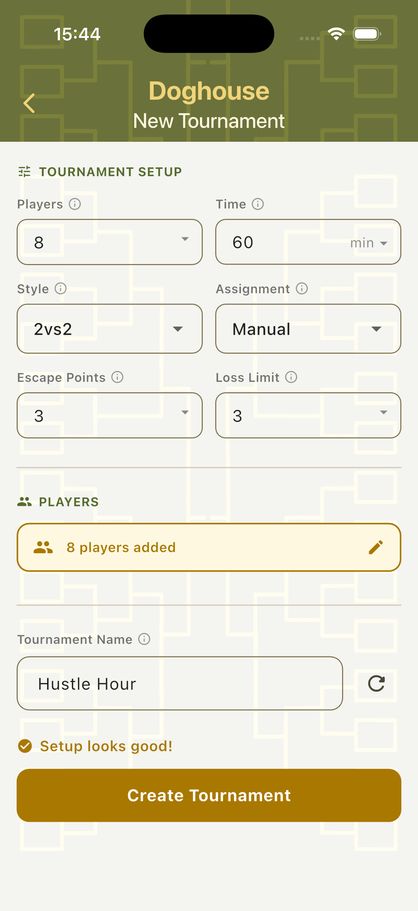
Manual Mode
In Manual mode, the organiser controls which two players go into the doghouse after each rotation. All available players are shown as tappable chip buttons — select two, confirm, and the game begins. The session timer counts down in the background throughout.
Select Doghouse Team
The scorecard opens with a player selection panel showing all participants as chip buttons. The "Select 2 players (0/2)" indicator tracks how many have been chosen. Match Controls at the bottom show the tournament context: name, match style, player count, escape target (green chip), and loss limit (red chip). Enter Doghouse is disabled until two players are selected.
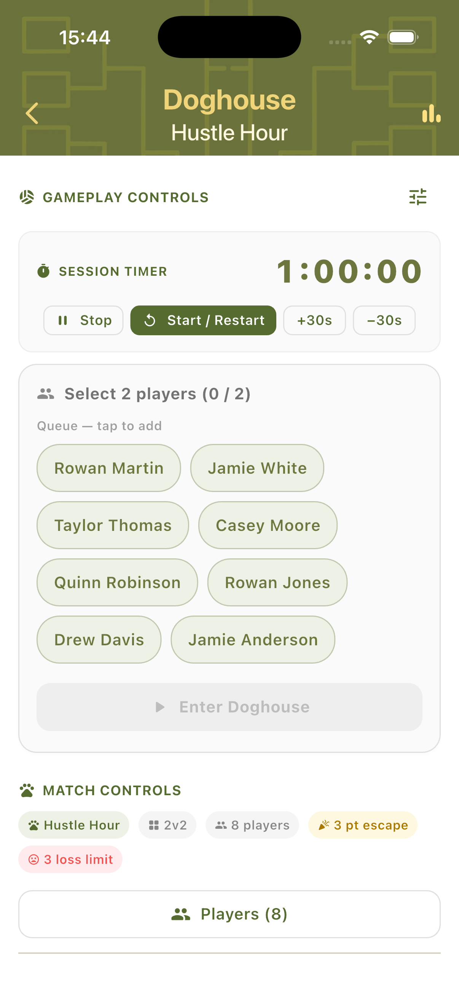
Confirm the Team
Once two players are selected, their chips are highlighted in gold and the Enter Doghouse button activates. Tap it to place the selected pair in the doghouse and start the game against the waiting challengers.
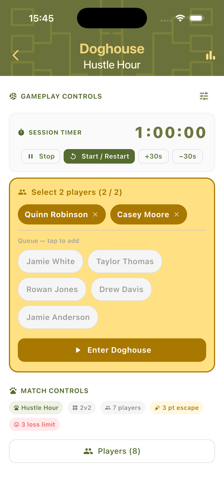
In-Game Scoring
Once in play, the doghouse team's card shows their names, current score, time on court, and two counters: the escape progress (e.g. 1/3) and the loss counter (e.g. 0/3). Use the + and − buttons to score points. A separate Game Lost panel on the right tracks losses independently with an Undo button for corrections.
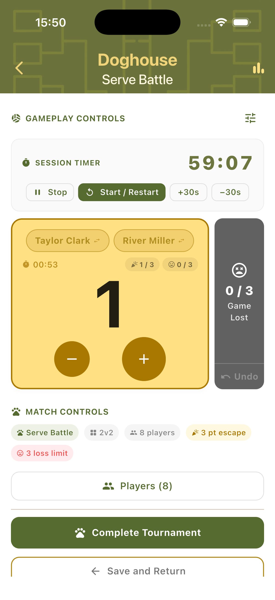
Automated Mode
In Automated mode, TournaQ manages the queue automatically. The scorecard shows three sections: Up Next (who goes into the doghouse next), Challengers (the team about to play them), and In Doghouse (the current team under pressure). A landscape view is available throughout for table-side or net-post use.
Queue View
The session timer runs at the top. Below it, the Up Next row shows which pair will enter the doghouse next (with a Re-roll button). The Challengers row shows who is waiting to play against the doghouse team. The In Doghouse card shows the current team's score, time on court, escape counter, and loss counter. The Game Lost panel appears to the right with an Undo button.
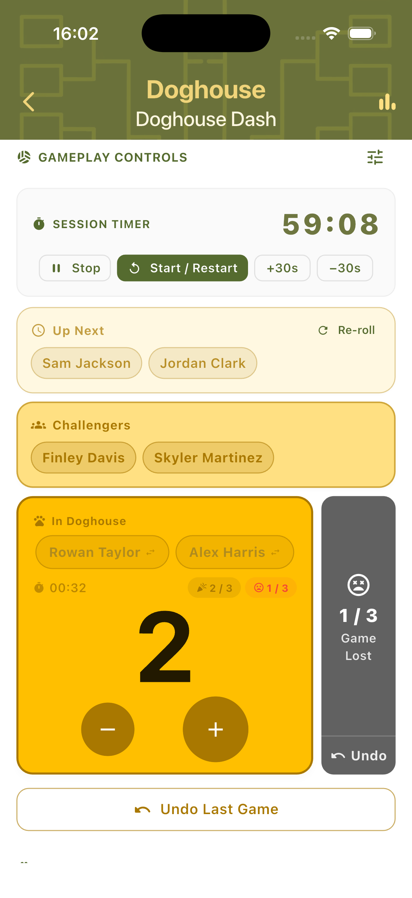
Landscape Scoring
Rotate the device to switch to landscape mode. The session timer and controls move to the left column. The In Doghouse team card and Game Lost panel appear on the right. Useful when the device is placed flat on a table or attached to a net post during play.
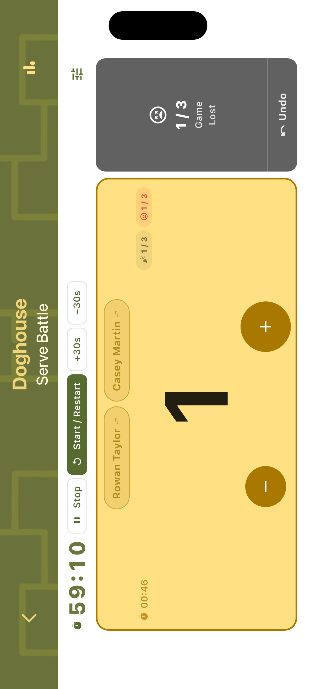
Game Events
Two outcomes resolve a doghouse stint: the team escapes by reaching the Escape Points target, or they are ejected by hitting the Loss Limit. Both trigger a confirmation dialog before the next rotation begins.
Escaped!
When the doghouse team scores enough points to reach the Escape Points target, a celebration dialog appears. It names the team, confirms how many points they scored, and announces they are returning to the queue. Tap Escape! to confirm the result and begin the next rotation.
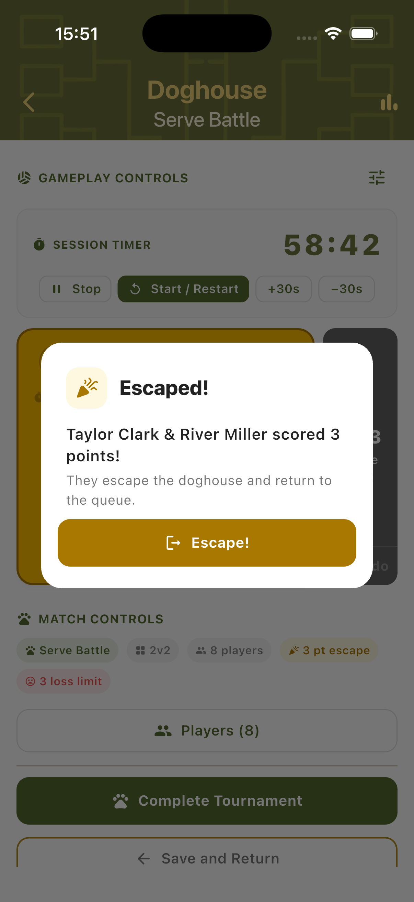
Ejected!
If the doghouse team loses too many games before escaping, an Ejected dialog appears in red. It names the team and confirms they hit the Loss Limit. They return to the queue without an escape credit. Tap Eject Team to confirm and continue the session.
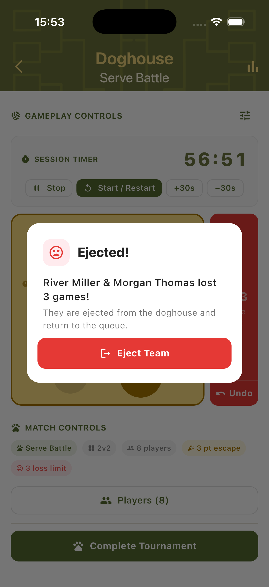
Player Stats & Final Standings
Player stats are tracked across the entire session. Escapes, losses, games played, and total points accumulate continuously. Stats can be viewed at any point and the complete final standings are shown when the session timer reaches zero.
Player Stats Panel
The Player Stats panel shows each player ranked by total points, with columns for Games, Escapes (Esc), Games Lost (Lost), and Points (pts). The session leader appears at the top. Stats reflect the full session including all escape and ejection events.
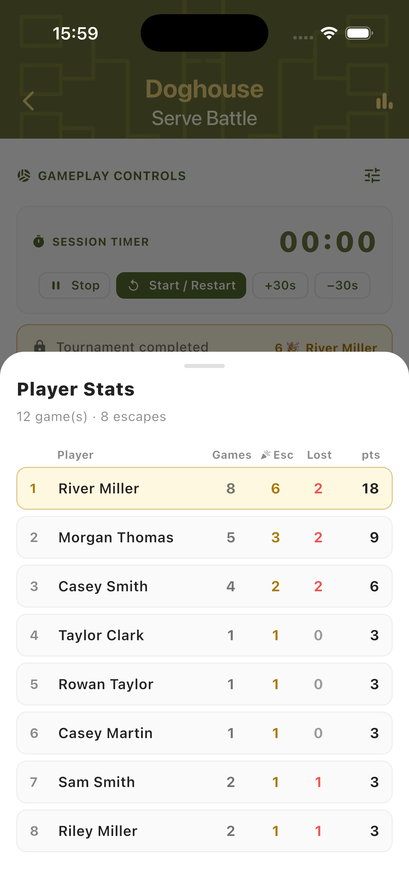
Tournament Complete
When the session timer reaches zero, a Tournament Complete dialog shows the final summary: total games played, total escapes across all players, and the Final Standings with each player's escape count and losses. Tap Done to close and return to the Doghouse hub.
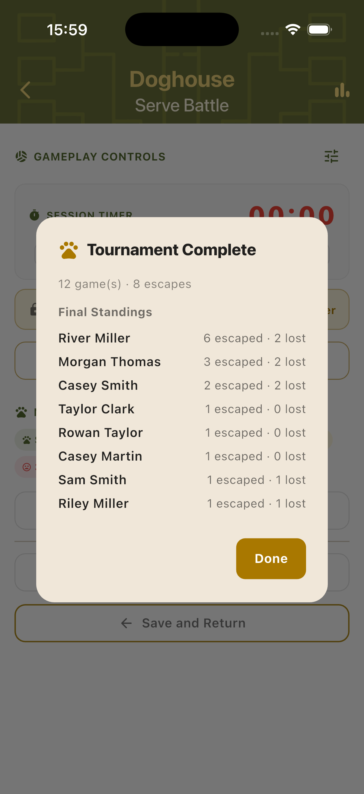
Step-by-Step Workflow
- Open TournaQ and navigate to Doghouse.
- Tap New Tournament and configure players, session time, match style, assignment mode, Escape Points, and Loss Limit.
- Add players and name the tournament, then tap Create Tournament.
- Start the session timer. In Manual mode: select two players from the panel and tap Enter Doghouse. In Automated mode: the first pair is assigned automatically.
- Use the + and − buttons to track the doghouse team's score against the challengers.
- If the doghouse team reaches the Escape Points target, tap Escape! — they return to the queue with an escape credited.
- If the doghouse team hits the Loss Limit, tap Eject Team — they return to the queue without an escape credit.
- The next pair enters the doghouse and the cycle continues.
- Continue until the session timer reaches zero. Review the final Player Stats in the Tournament Complete dialog.
Have a question about Doghouse, spotted something missing, or want to suggest an improvement?